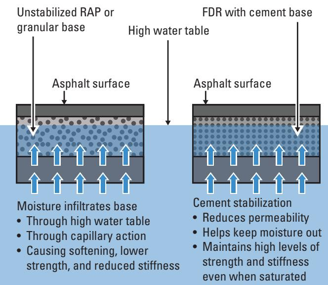
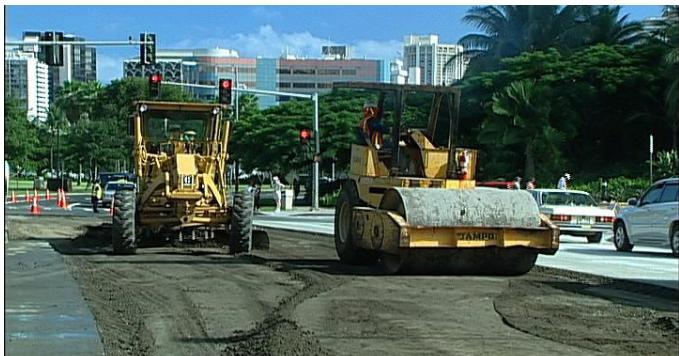
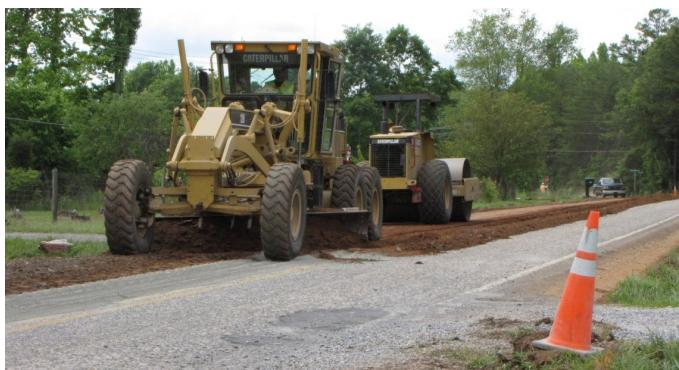
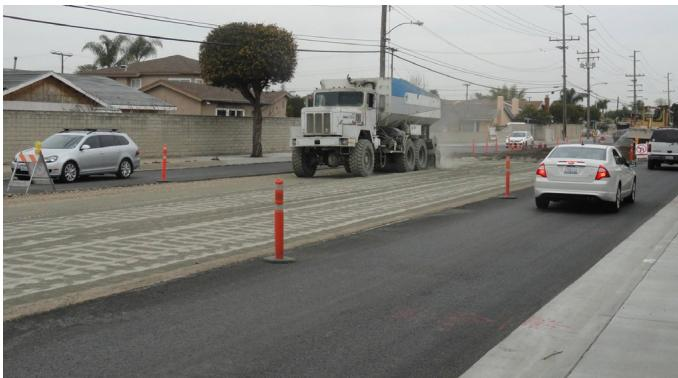
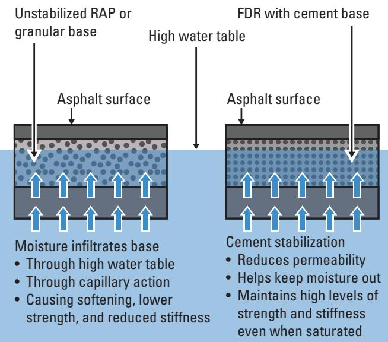
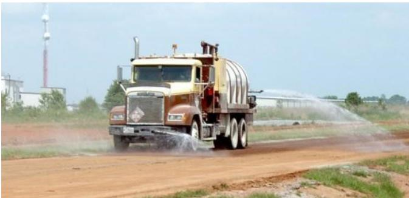
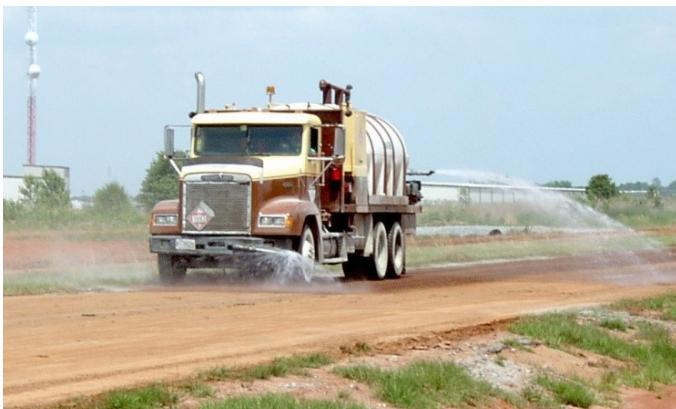
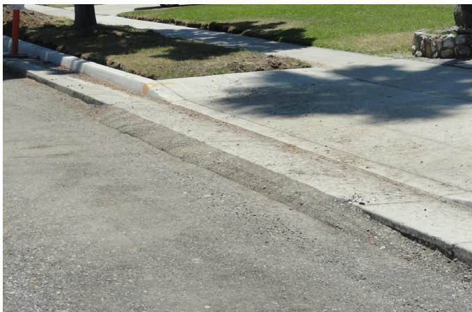
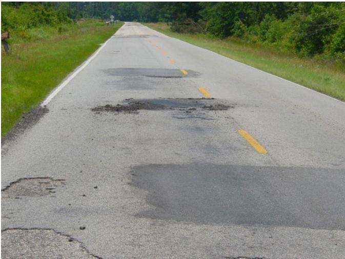

FDR Base Compaction Control
FDR Base Compaction Control is a full‑depth reclamation technique that stabilizes an existing distressed pavement and its underlying base by pulverizing the in‑situ hot‑mix asphalt together with part of the granular base, uniformly blending the reclaimed material with Portland cement (or slurry) and water, and then compacting the mixture to form a homogenous cement‑stabilized base [3][5][7]. It is applied when the existing structure cannot sustain current or anticipated traffic loads and simple resurfacing would be insufficient, provided drainage deficiencies are corrected and the subgrade can support the treated layer; compaction must achieve at least 98 % of maximum dry density in the top foot to meet performance criteria [3][5]. By converting a weak, unbound base into a stiff, low‑permeability foundation with targeted unconfined compressive strength (200–500 psi) and California Bearing Ratio values (5–12 %), the method restores structural capacity and durability while avoiding extensive material hauling or full reconstruction [3][7].
Sources (7)
Purpose and applicability
Across the guides, FDR Base Compaction Control is presented as a remedy for the core deficiency that causes premature pavement failure – an unstable or inadequately strong foundation that cannot sustain current or future traffic loads. By pulverizing the existing HMA and base layers, mixing them with cement, and uniformly compacting the full‑depth reclaimed mix, the technique converts a distressed surface and weak unbound granular base into a new homogenous, cement‑stabilized base that restores structural capacity and durability without the need for extensive material hauling or complete reconstruction. [3][5][7]
The figure below illustrates how this stabilization process significantly lowers the permeability of the base layer compared to untreated granular materials.

Comparison of moisture infiltration and structural integrity in unstabilized versus cement-stabilized FDR base layers. [3]The figure illustrates a cross-section comparison between an unstabilized RAP or granular base and a Full-Depth Reclamation (FDR) with cement base under high water table conditions. In the unstabilized layer, moisture is shown infiltrating through capillary action from the subgrade, causing softening and reduced stiffness.
[3] — Ch. 1 (pp. 13–22), Ch. 2 (p. 26), Ch. 3 (pp. 33–35), Ch. 5 (pp. 64–66), Ch. 6 (pp. 77–85), Ch. 7 (pp. 88–96); [5] — Benefits (p. 62), Description (pp. 62–63); [7] — Ch. 1 (p. 13)
The guides indicate that full‑depth reclamation (FDR) with cement‑stabilized base compaction control is appropriate when the existing pavement and underlying base are in poor condition such that simple resurfacing would not suffice, when surface distress points to base or subgrade problems, when more than fifteen to twenty percent of the area would require full‑depth patching, or when the present structure cannot accommodate current or anticipated traffic loads. Under these circumstances the existing HMA pavement is pulverized as needed, blended with Portland cement, and recompacted to form a uniform, stiff base that can receive a new surface.\n\nHowever, the guides also require that drainage deficiencies be corrected before FDR is applied; “If there are areas with drainage problems such as saturated subgrade or inadequate drainage systems to divert water away from the pavement structure, FDR alone will not rectify this issue.” Likewise, the subgrade must be capable of supporting the cement‑stabilized layer: “If the subgrade material below the FDR layer is soft and will not adequately support the FDR layer, construction personnel should halt construction until a solution is determined.” When these prerequisites are satisfied, achieving full compaction in at least the top foot meets performance criteria: “Although full compaction may not be achieved below 12 in., as long as the top foot is compacted and the base can be proof rolled without obvious displacement, satisfactory performance has been attained.”\n\nIf any of these prerequisites—proper drainage, sufficient subgrade support, or ability to meet the required compaction depth—cannot be met, an alternative rehabilitation method should be selected: “If any of these prerequisites—proper drainage, sufficient subgrade support, or ability to meet the required compaction depth—cannot be met, an alternative rehabilitation method (e.g., spot removal, low‑percentage cement treatment of the soil, cold‑planing, or use of a non‑stabilized RAP base) should be selected instead.” Additionally, when distress is limited, the structure remains adequate, or simple resurfacing can restore performance, “another rehabilitation method should be selected instead of FDR.” [3][5]
[3] — Ch. 1 (pp. 15–18), Ch. 3 (pp. 33–38), Ch. 5 (pp. 64–65), Ch. 6 (pp. 81–82), Ch. 7 (pp. 89–90); [5] — Description (pp. 62–63)
Required inputs
The guides collectively require that the existing pavement be fully processed before any stabilization. They state that “existing in‑situ asphalt pavement together with a portion of its underlying base, subbase or subgrade be fully pulverized, then uniformly blended with Portland cement and water to form a homogeneous stabilized mix.” Gradation limits are emphasized: “A minimum of 55 percent passing the no. 4 sieve is required,” and, where more detailed limits are given, “minimum of 100 % passing a 3‑in (75 mm) sieve, 95 % passing a 2‑in (50 mm) sieve and 55 % passing the No. 4 (4.75 mm) sieve.” Cement dosage is tied to strength targets; for mixes with high reclaimed asphalt content the guides note that “When RAP constitutes about 75 % of the blend, the resulting mixture should achieve an unconfined compressive strength of 200–500 psi and a California Bearing Ratio of 5‑12 %,” while other specifications call for “a cement content that provides a seven‑day unconfined compressive strength between 300 to 400 psi.”
Compaction must be performed at optimum moisture to reach maximum dry density, as the guides require that “The CTB mixture should be compacted at optimum moisture to maximum dry density as determined by preliminary laboratory testing per AASHTO T134 or ASTM D558, or as defined by project specifications.” Typical field criteria call for a final density of at least 98 % of the maximum dry density.
Site preparation is a prerequisite. The guides stress that “Prior to mixing, the site must be prepared: all underground utilities are marked, any weak or unstable zones have been corrected, and the subgrade is capable of supporting the layer (soft soils are removed or replaced).” This includes shaping the crown and grade and correcting any unstable zones before pulverization.
Cement can be placed either dry or as a slurry. For dry placement the guides specify that “Cement is most commonly applied in a dry condition, in which case the cement should be uniformly spread in a controlled manner by a spreader truck equipped with a mechanical spreader.” When using slurry, they add that “With cement slurry application, it is important that the slurry be dispersed uniformly over the subgrade area so that it does not pool or run off.” Dust control is highlighted as critical: “The most important time for dust control is immediately before the applied cement impacts the ground,” especially on windy days.
Together, these material specifications, mixture property targets, and site‑condition requirements define the FDR base compaction control process. [3][5][7]
The figure below illustrates these compaction and final grading operations.

Compaction and final grading operations [3]The image displays heavy construction machinery, including a motor grader and a vibratory roller, operating on a prepared roadway surface. The equipment shown performs the final grading and compaction operations necessary to achieve the required density for the stabilized layer.
[3] — Ch. 1 (pp. 13–19), Ch. 2 (p. 25), Ch. 3 (pp. 33–35), Ch. 4 (p. 49), Ch. 5 (pp. 64–66), Ch. 6 (pp. 74–85), Ch. 7 (pp. 87–91); [5] — Construction (pp. 58–64), Description (pp. 62–63), Materials (p. 63); [7] — Ch. 5 (pp. 41–42)
Design and pre‑construction control of an FDR base are governed by a series of dimensional tolerances, material limits, and test requirements that must be verified before work begins and continuously monitored during construction. Subgrade strength is first evaluated with a Dynamic Cone Penetrometer test performed in accordance with ASTM D6951 (or optionally a Falling Weight Deflectometer); if the measured values are insufficient, the subgrade is treated with 2 %–4 % cement by weight mixed into a depth of 6 in.–18 in. to provide a stable foundation.
Gradation limits for the reclaimed material are defined by two complementary sets of requirements: at least 55 % of the combined material must pass the No. 4 sieve, no more than 20 % may pass the No. 200 sieve unless the plasticity index is ≤ 20; when PI exceeds 20 a small cement pretreatment is required, and simultaneously the material must meet stricter sieve limits of 100 % passing the 3‑in (75 mm) sieve, 95 % passing the 2‑in (50 mm) sieve, and 55 % passing the No. 4 (4.75 mm) sieve.
Moisture content during mixing is held within ±2 % of the optimum value established by laboratory moisture‑density tests such as AASHTO T134 or ASTM D558; the surface may be pre‑wet if needed before mixing and the reclaimed material should be at or near this optimum moisture prior to cement addition.
Pulverization creates a loose layer 8–9 in. thick that compacts to a finished thickness of 6 in.; longitudinal joints must overlap a minimum of 6 in. and transverse joints a minimum of 2 ft. Uniform cement spreading is confirmed by weighing the cement on a one‑square‑yard canvas, and mixing quality is inspected in excavated trenches for a uniform color and texture together with a phenolphthalein pink‑red reaction that reaches the bottom of the treated depth.
Compaction is performed with rollers specified in the contract documents; large pneumatic‑tired, vibratory smooth‑drum or pad‑foot rollers may be used for initial and intermediate passes, finishing rolling is typically done with a vibrating smooth drum or static steel roller, and vibratory‑steel rollers, sheepsfoot rollers, or pneumatic‑tire rollers are also typical. The base must be uniformly compacted to a minimum of 98 % of maximum dry density in accordance with ASTM D558 or AASHTO T‑134, based on a moving average of five consecutive nuclear gauge tests (direct‑transmission mode) with no individual test below 96 %; a proof‑roll test of the top foot must show no obvious displacement. The interval between start of mixing and final compaction shall not exceed two hours, and the time after initial contact of cement with water shall not exceed 60 minutes, with mixing beginning within 30 minutes of cement placement.
Strength control relies on seven‑day unconfined compressive strength (UCS) measured per ASTM D1633. Accepted values range from a minimum of 200–300 psi to a maximum of 450–800 psi; many agencies target a tighter range of 300–400 psi, and trial mixes are used to select the cement content that provides a UCS of 300–400 psi, with acceptance confirmed by pre‑construction testing of trial specimens.
Before finish rolling, final grade and cross‑slope are checked against design tolerances to ensure the crown and grade are achieved. After placement, the cured surface is kept continuously moist for several days to develop the intended strength. [3][5]
The following figure illustrates the grading process for the pulverized FDR mix.

Grading of pulverized FDR mix [3]The image displays heavy construction equipment, including a motor grader and a roller, operating on a roadbed where the surface material has been pulverized.
[3] — Ch. 2 (p. 26), Ch. 5 (pp. 64–66), Ch. 6 (pp. 77–84), Ch. 7 (pp. 88–91); [5] — Construction (pp. 58–59), Materials (p. 63)
Equipment and personnel
Preparation of an FDR base calls for “A pulverizer is used to grind the existing pavement”, a reclaimer (or reclaimer mixer) that “supplies reclaimed material”, and “A cement spreader and mixing unit blend cement and water into a homogeneous slurry”. “Water trucks provide moisture for mixing” and “Motor graders (preferably with automatic grade control) level the mix.” In some operations “cement is then placed dry with a mechanical spreader attached to a dump truck or bulk cement truck (or as a slurry)” and a “singleshaft pulvermixer combines the aggregate and cement”; alternatively “pugmills or rotary‑drum mixers” may be used. Placement is performed by “The motor grader spreads and levels the stabilized mixture while the cement spreader ensures uniform placement of cement”, with an “aggregate spreader distributes the mixture before it is compacted” and “Water trucks continue to supply moisture as needed.” Compaction or consolidation employs “the types of compactors that can be used on a project include tamping-foot, smooth-drum vibratory, and pneumatic‑tired rollers”, and “Vibratory‑steel rollers, sheepsfoot rollers, or pneumatic‑tire rollers are typically used”; a “static finish roller may be used for final densification” and “a vibratory roller can address micro‑cracking.” Finishing requires the surface to be kept moist by means of water spray devices that will not erode the surface: “During the finishing process the surface should be kept moist by means of water spray devices that will not erode the surface,” along with shaping, surface scratching, broom dragging, light water application and a final pass with a pneumatic steel roller; after rolling, “a curing compound is applied with appropriate equipment to initiate curing.” Curing is achieved by continuously monitoring moisture: “Moisture is monitored continuously; curing compounds are sprayed onto the surface as specified,” and keeping the cured base continuously moist by light watering, misting or a moisture‑retaining cover for three to seven days. Testing uses a nuclear gauge in direct transmission mode: “If a nuclear gauge is used to determine in-place density, conduct tests in the direct transmission mode to the full depth of the stabilized layer,” and moisture content is measured with a microwave oven or other ASTM‑approved methods: “The moisture content should be taken using microwave oven, direct heating, or established ASTM procedures instead of relying on the nuclear gauge.” The base must achieve “a minimum of 98 % of maximum dry density in accordance with ASTM D558 or AASHTO T 134 based on a moving average of five consecutive tests with no individual test below 96 %”. [3][5]
The following figure illustrates the schematic of the mixing chamber within a reclaimer machine.
 Schematic of the mixing chamber of a reclaimer machine [5]
Schematic of the mixing chamber of a reclaimer machine [5]
The figure displays a schematic cross-section of a milling drum actively pulverizing distressed pavement and granular material. Water is shown being injected into the mixing zone to facilitate blending, resulting in a deep recycled layer that represents the stabilized base. This process illustrates the mechanical preparation phase of full-depth reclamation where in-situ materials are ground and mixed to form a homogenous foundation.
[3] — Ch. 6 (pp. 75–83), Ch. 7 (pp. 88–89); [5] — Construction (pp. 58–64)
The FDR base compaction control process requires a coordinated crew that includes construction observation personnel and qualified equipment operators. The guides state that “Construction observation personnel should verify the pulverization, grading, cement application, mixing, and compaction operations.” Operators must be skilled drivers of the pulverizer, cement spreader, water‑mixing unit, motor grader (preferably with automatic grade control), compaction roller, finish roller, and when needed a vibratory roller. They must establish “Verify an adequate rolling pattern has been established and the compaction roller is immediately following the reclaimer.” Roller operators are required to read and act on live feedback; as one guide notes, “Intelligent compaction … provides real-time data to roller operators regarding the compaction of material directly under the roller as it is operating,” and they must be able to “A roller outfitted with intelligent compaction equipment also has the ability to adjust the frequency and amplitude of the vibrating drum to ensure consistent and uniform material compaction across the entire project area.” Inspection staff and contractor representatives use the accelerometer‑derived, location‑linked data: “The data collected with the accelerometers are coupled with location data relative to the project datum allowing the inspection staff and contractor to see where passes have met target values.” Additional operator competencies include operating cement spreaders at a steady pace—“cement spreaders should be operated at a constant slow rate of speed”—maintaining optimum moisture through “Prewetting and premixing the soil at optimum moisture content before processing begins,” using “String line or other edge markers should be used to obtain the true edge of pavement,” controlling machine speeds (“Slower forward speed of the mixing machine”), performing “Additional passes, if using a multiple-pass mixing machine,” and conducting routine maintenance such as “Replacing worn mixer teeth.” Together these qualified personnel ensure uniform density, proper moisture control, and compliance with timing limits throughout the FDR base construction. [3][4]
The following figure illustrates the final compaction phase using a tamping roller and a smooth-wheeled vibrating roller.
 Final compaction of FDR base with a tamping roller (right) and a smooth-wheeled vibrating roller [3]
Final compaction of FDR base with a tamping roller (right) and a smooth-wheeled vibrating roller [3]
The image displays two heavy construction rollers operating on a prepared earth surface, illustrating the final stage of stabilizing reclaimed pavement. This equipment configuration is essential for the full-depth reclamation process, which converts weak, unbound bases into stiff foundations by compacting pulverized asphalt blended with cement.
[3] — Ch. 7 (pp. 88–90); [4] — Ch. 4 (p. 47)
Work sequence
Before any FDR Base Compaction Control can commence, the project must first address drainage deficiencies and make required geometric corrections. The work area is then shaped to the required crown and grade, all unstable subgrade sections are corrected, and, when needed, the soil is scarified, pulverized and pre‑wetted; a final reshaping of the crown and grade completes this preparation. Testing of the subgrade/subbase is desirable to ensure there will be a solid foundation beneath the proposed FDR layer, and any soft subgrade must be replaced with suitable fill and compacted. All underground utilities and drainage structures are properly marked, and equipment readiness—including reclaimer teeth, spray bar and water delivery—is verified. A laboratory test program and trial‑mix procedure must be finished to lock in the cement‑to‑water ratios that will achieve the required strength. The existing distressed pavement is then pulverized and blended with the underlying base or subgrade using a roadway reclaimer or scarifier to the full mixing depth, water is added to reach optimum moisture content, and the material is graded. The crown and grade of the planned roadway should be noted, and grading should be completed as necessary to match the construction drawings, taking special care not to over‑excavate because material cannot be easily replaced after cement is applied. [3][5][7]
The following figure illustrates a dynamic cone penetrometer test used to verify subgrade conditions.
 Field technician performing a dynamic cone penetrometer test on the prepared subgrade. [3]
Field technician performing a dynamic cone penetrometer test on the prepared subgrade. [3]
A worker wearing safety gear operates a dynamic cone penetrometer to evaluate the soil conditions at a specific point marked with orange spray paint.
[3] — Ch. 1 (pp. 13–19), Ch. 3 (pp. 33–38), Ch. 5 (pp. 64–66), Ch. 6 (pp. 74–84), Ch. 7 (pp. 87–91); [5] — Construction (pp. 58–64), Materials (p. 63); [7] — Ch. 1 (p. 13), Ch. 5 (p. 41)
Step‑by‑step sequence of operations for FDR Base Compaction Control:
-
Pre‑work and site preparation – Confirm subgrade capacity: “Verify that the existing subgrade can support the FDR layer by conducting a dynamic cone penetrometer test in accordance with ASTM D6951 (or equivalent).” Shape the work area to the required crown and grade (“Shape area to crown and grade”) and correct any unstable zones (“Correct unstable subgrade areas”).
-
Pulverization – Deploy a road reclaimer to break up the existing pavement: “The FDR base construction starts by deploying a road reclaimer that pulverizes the existing asphalt surface together with part of the underlying base, sub‑base or subgrade.” Verify depth compliance (“Verify the depth of pulverization meets the depth specified in the contract documents”). The reclaimer makes an initial pass that also blends material and adds water as needed (“The reclaimer makes an initial pass over the existing pavement to pulverize the HMA surface and blend it with base or subgrade material, adding water as needed to reach optimum moisture.”).
-
Grading & shaping before cement – Grade and shape the pulverized mix to the design elevation: “The material is then graded and shaped to the required elevation before cement—dry powder or slurry—is added.”
-
Cement placement – Distribute cement in the chosen form: “Cement—either dry or in slurry—is then spread in a controlled manner onto the mixed surface and the reclaimer thoroughly mixes it.”
-
Mixing – Initiate final mixing promptly after cement placement: “After the cement has been placed on the pulverized material, final mixing commences.” Keep timing within limits (“Ensure that the time after initial contact of cement with water does not exceed 60 minutes. Mixing operations should begin within 30 minutes of placement of the cement.”).
-
Compaction – Compact each layer at optimum moisture using appropriate rollers: “Each layer is compacted at the optimum moisture to achieve the maximum dry density specified by laboratory tests (AASHTO T134/ASTM D558) using vibratory steel, sheepsfoot or pneumatic‑tire rollers.” Follow an established rolling pattern (“Verify an adequate rolling pattern has been established and the compaction roller is immediately following the reclaimer.”).
-
Density verification – Check that required density is achieved: “The FDR base should be uniformly compacted to a minimum of 98 percent of maximum dry density in accordance with ASTM D558 or AASHTO T 134 based on a moving average of five consecutive tests with no individual test below 96 percent.”
-
Immediate finishing – Perform final shaping and surface treatment: “Immediate finishing follows—shaping, surface scratching, broom dragging, light water application and a final roll with a pneumatic steel roller—to produce a smooth, uniformly compacted surface.” Ensure the grader tracks the rollers (“Monitor to ensure the motor grader (preferably with automatic grade control) is closely following the compaction rollers.”).
-
Curing – Keep the base moist until cement hydrates: “Perform static rolling while keeping the surface moist; apply a bituminous curing seal or other curing compound as required.” Continue moisture maintenance for several days (“The base is then cured by keeping it continuously moist for three to seven days.”). [3][5]
The figure below illustrates the placement of plant-mixed CTB on the prepared subgrade.
 Placement of plant-mixed CTB on prepared subgrade [5]
Placement of plant-mixed CTB on prepared subgrade [5]
The image displays a large-scale construction operation where heavy machinery is placing and compacting a cement-treated base (CTB) layer. A paver machine is spreading the mixture while vibratory rollers follow to achieve compaction, which aligns with the requirement that CTB mixtures be compacted at optimum moisture to maximum dry density.
[3] — Ch. 1 (pp. 13–19), Ch. 5 (pp. 64–65), Ch. 6 (pp. 74–83), Ch. 7 (pp. 88–89); [5] — Construction (pp. 58–64), Description (pp. 62–63)
The guides require that mixing start promptly after slurry placement and finish quickly: “Mixing operations must begin immediately after the slurry is placed and be completed within 30 minutes,” and the total window from the beginning of mixing to final compaction “must be kept under two hours.” A broader continuity rule adds that “the cement‑treated base must be mixed and placed in a continuous operation that is completed within one day.” The period between cement‑water contact and slurry application is limited to “should not exceed 60 minutes, unless a retarding admixture is used.” After the reclaimed base is mixed, placed and compacted, surface‑course timing differs: one source states it “must be placed no later than 48 hours,” while another requires that “no surface treatment may be applied until this curing period has elapsed” after keeping the base “continuously moist for three to seven days.” Core extraction is also timed: “Core samples may not be taken until at least seven days have elapsed after completion of the FDR layer.” [3][5]
[3] — Ch. 1 (pp. 21–22), Ch. 6 (pp. 76–85), Ch. 7 (pp. 88–93); [5] — Construction (pp. 58–64)
Staging and logistics
Effective FDR base compaction must be organized within a limited working envelope that is defined by equipment dimensions and required clearances. The guides note that some reclaimers are as narrow as 6 ft, which improves maneuverability in environments such as urban settings, so aisle clearance, turning radii, and cross‑cut space must be verified before work begins. Sufficient open area is also needed for a cement spreader or slurry distributor, and when using cement slurry an earthen dike should be built around the treatment perimeter to prevent runoff.
Site‑access planning centers on early identification of all underground utilities and drainage structures; all utilities need to be located during the planning stage of the project to minimize the risk of conflicts during construction. Protective measures—such as temporary covers over manholes and careful handling of curbs and gutters—are required to keep these features clear of pulverizing and mixing equipment.
Weather constraints dominate scheduling. Rain is the primary weather constraint on FDR base compaction control; light rain after finishing does not usually harm the layer, but rainfall during mixing can raise moisture content beyond acceptable limits and impede achieving the required minimum compaction. Consequently, work must be timed to avoid precipitation during the mix‑to‑compact interval, and moisture levels are monitored to stay within ±2 % of optimum.
Environmental considerations focus on dust and moisture loss. The contractor will need to take care to control fugitive dust, especially during windy conditions; wind can mobilize dry cement powder, creating health and quality issues that require dust‑control equipment or limiting work when winds exceed normal levels. Maintaining surface moisture through curing membranes or moist curing further protects the treated base from premature drying. [3][7]
The following figure illustrates the application of dry cement powder to the pulverized mix.

Application of dry cement powder to pulverized mix [3]A large white truck is actively spreading a cloud of material onto the road surface, which appears as a light-colored, textured layer distinct from the adjacent asphalt. This scene depicts the specific step of adding a binder to the reclaimed pavement material, which is essential for converting the weak base into a stiff foundation.
[3] — Ch. 1 (pp. 15–18), Ch. 3 (pp. 33–43), Ch. 6 (pp. 75–85), Ch. 7 (pp. 87–96); [7] — Ch. 5 (pp. 41–42)
Quality control and acceptance
The inspection must verify that the stabilized mix attains the required strength, stiffness, permeability, moisture condition, gradation, density, thickness, and equipment performance. Strength is confirmed by unconfined compressive strength testing; the guides state that “Typically an FDR base has an unconfined compressive strength in the range of 200 to 500 psi.” Stiffness and bearing capacity are evaluated with California Bearing Ratio tests, with “the average California Bearing Ratio (CBR) values for a mechanically stabilized FDR mix consisting of 75 percent RAP to be in the range of 5 to 12 percent.” The base should exhibit low permeability, as noted that “A cement‑stabilized base has a reduced permeability that helps keep moisture out.” Moisture content at cement addition must be within ±2 % of optimum; compaction is required at optimum moisture to achieve maximum dry density per laboratory guidance: “The CTB mixture should be compacted at optimum moisture to maximum dry density as determined by preliminary laboratory testing per AASHTO T134 or ASTM D558, or as defined by project specifications.” Gradation limits must be met: “minimum of 100 percent passing the 3‑in. (75‑mm) sieve, 95 percent passing the 2‑in. (50‑mm) sieve, and 55 percent passing the No. 4 (4.75‑mm) sieve.” Compaction density targets are set at a moving average of at least 98 % of maximum dry density with no individual test below 96 %, as expressed: “The FDR base should be uniformly compacted to a minimum of 98 percent of maximum dry density in accordance with ASTM D558 or AASHTO T 134 based on a moving average of five consecutive tests with no individual test below 96 percent.” Real‑time compaction monitoring is required; intelligent‑compaction equipment provides immediate feedback: “Intelligent compaction … provides real-time data to roller operators regarding the compaction of material directly under the roller as it is operating.” The roller’s vibrating drum must be set correctly, and the system can adjust frequency and amplitude to maintain uniformity: “A roller outfitted with intelligent compaction equipment also has the ability to adjust the frequency and amplitude of the vibrating drum to ensure consistent and uniform material compaction across the entire project area.” Finally, geometric control is inspected; the roadway crown and grade must be identified and grading must follow design drawings: “The crown and grade of the planned roadway should be noted” and “grading should be completed as necessary to match the construction drawings.” [3][4][5][7]
The following figure illustrates how this reduced permeability makes cement-stabilized FDR less susceptible to moisture intrusion compared to a compacted RAP base.

Comparison of moisture infiltration in unbound versus cement-stabilized FDR bases under high water table conditions. [3]The figure illustrates a cross-section comparison between an unstabilized RAP or granular base and a Full-Depth Reclamation (FDR) base with cement, both subjected to a high water table. In the unstabilized section, arrows indicate that moisture infiltrates the base through capillary action and the high water table, causing softening and reduced stiffness.
[3] — Ch. 1 (pp. 15–16), Ch. 2 (p. 26), Ch. 4 (pp. 48–49), Ch. 5 (pp. 64–66), Ch. 6 (pp. 74–85), Ch. 7 (pp. 87–95); [4] — Ch. 4 (p. 47); [5] — Construction (pp. 58–59), Materials (p. 63); [7] — Ch. 5 (p. 41)
Across the guides, measurements for FDR base compaction are described as occurring continuously throughout construction. The guides state that “Measurements are taken throughout every critical phase of FDR base construction.” A “dynamic cone penetrometer (DCP) test is run at each sampling location, specifically at the bottom of the sampling cavity before backfilling” to capture a value for every sampled spot. Pulverization depth is monitored with the instruction that “the depth of pulverization should be checked regularly to verify adequate pulverization,” and operators are told to “Take a depth check anytime the depth changes or if the equipment sits idle.” Density control during placement requires that each lift meet a “minimum of 98 percent of maximum dry density in accordance with ASTM D558 or AASHTO T 134 based on a moving average of five consecutive tests with no individual test below 96 percent.” In addition, compaction is tracked in real time: “Intelligent compaction … provides real-time data to roller operators regarding the compaction of material directly under the roller as it is operating,” and “Rollers equipped with intelligent compaction technology can use accelerometers or other technology mounted on the machine to calculate compaction values in real time.” The collected readings are linked to location, as described: “The data collected with the accelerometers are coupled with location data relative to the project datum allowing the inspection staff and contractor to see where passes have met target values.” [3][4]
[3] — Ch. 5 (pp. 64–65), Ch. 6 (pp. 77–83), Ch. 7 (pp. 88–90); [4] — Ch. 4 (p. 47)
The FDR base is accepted only when the reclaimed‑asphalt mix satisfies all of the design tolerances for gradation, moisture, density and uniformity. The gradation requirement is that “minimum of 55 percent passing the no. 4 sieve is required”; if the fine content falls short, corrective aggregate is added or a small amount of cement (or lime/calcium chloride) is used to lower plasticity before acceptance. Moisture must be controlled tightly: “Moisture content at time of mixing should be at ± 2 percent of optimum moisture content.” When the measured moisture is low, water is introduced via the reclaimer’s on‑board applicators or a separate watering step until the tolerance is met. Compaction quality is verified by density testing; the layer must be “uniformly compacted to a minimum of 98 percent of maximum dry density in accordance with ASTM D558 or AASHTO T 134 based on a moving average of five consecutive tests with no individual test below 96 percent.” If any test falls outside this range, work is stopped, the layer is allowed to cure, moisture and compaction procedures are adjusted, and the section is re‑compacted. Finally, visual and chemical uniformity is required: “The mix is considered satisfactory when there is a uniform color and texture throughout the entire treatment depth.” If streaked coloration or an incomplete phenolphthalein reaction is observed, mixing operations are modified and repeated until full-depth uniformity and the expected pink‑red response are achieved. These criteria define acceptance; any deviation triggers the corrective actions described above. [3]
The following figure illustrates a practical field method for verifying that moisture levels remain within the required tolerances before compaction begins.
 Hand-squeeze moisture test [3]
Hand-squeeze moisture test [3]
The image shows a pair of hands holding clumps of brown, granular soil against a background of loose earth.
[3] — Ch. 5 (pp. 65–66), Ch. 6 (pp. 77–83), Ch. 7 (pp. 89–91)
Safety and environmental controls
Across the guides, several hazards to workers and the public are identified during FDR base compaction. When dry cement powder is placed with a bulk spreader, “fugitive dust can be released, especially in windy conditions, requiring dust‑control measures such as a self‑contained vacuum system,” and “applying dry Portland cement can generate fugitive dust that poses an inhalation hazard to workers and nearby pedestrians… contractors therefore use spreader trucks equipped with dust‑control devices.” This dust exposure demands enclosures, wind‑avoidance, or vacuum systems. If cement is introduced as a slurry, “the contractor must prevent runoff of the liquid mix, which could create slip hazards and environmental exposure,” and “uneven distribution can cause pooling or runoff, creating slip hazards for personnel on site and potential contamination of adjacent areas, so earthen dikes are often constructed to confine the mix.” Proper containment prevents slips and protects surrounding areas. The guides also stress utility‑related dangers: “lighter plastic and wooden cover plates should be avoided… placing a steel plate over the manhole to prevent material from entering the sewer,” and “underground utilities need to be considered during the design and construction phase” because strikes or exposure can endanger both crews and the traveling public. Additionally, wind‑driven drying of the cement‑treated base may cause rapid moisture loss, leading to “compaction deficiencies, shrinkage cracking, and unsafe surface conditions for traffic users.” Finally, the stabilized base can produce “reflective cracking… and increased friction between the FDR and surface pavement,” which may reduce ride quality and increase the risk of vehicle loss‑control for road users. [3][5][7]
[3] — Ch. 6 (pp. 76–85); [5] — Considerations (p. 62); [7] — Ch. 5 (pp. 41–42)
Dust generation is limited by applying regular light sprays of water during moist curing, which keeps the reclaimed surface damp without eroding it; runoff from the bituminous curing coat is avoided by adhering to engineer‑specified application rates and temperatures that achieve full coverage without excess flow; temperature control of the bituminous material is therefore integral to preventing both runoff and inadequate penetration; traffic risk is managed by prohibiting vehicles on the fresh base until the coating has dried, and when early equipment access is unavoidable a sand blotter cover is placed to protect the surface. [3]
The following figure illustrates the application of water during moist curing to control dust generation on the reclaimed surface.

Water truck spraying on compacted FDR layer [3]A heavy-duty water truck is driving along a reddish-brown unpaved road, actively spraying water from nozzles mounted at the front and rear of the vehicle. The spray creates visible mist and wet patches on the surface, which is consistent with moist curing techniques used to control shrinkage cracking in cement-stabilized bases.
[3] — Ch. 6 (pp. 83–84)
Curing, protection, and handoff
The completed FDR base is protected by maintaining a continuously moist condition immediately after final compaction and keeping the layer undisturbed. The guides require that “the completed FDR base should be left undisturbed for a curing period of two days before any surface course is placed,” and that moisture be retained for a total of three to seven days. Moisture can be supplied by light watering or misting, continuous water application with a metered water‑truck, or by applying an approved bituminous sealing membrane or other moisture‑retaining cover. The membrane “should be installed as soon as practicable, but no later than 24 hours after finishing” to lock in moisture and shield the slab from wind, rain, or traffic. When a curing compound is used, it must be spread at a rate that fully covers the stabilized layer. Throughout the cure period the surface must remain continuously moist, over‑working avoided, and low‑speed traffic may be permitted only after the moisture regime has been satisfied, allowing the cementitious binder to hydrate fully and develop strength before any subsequent surfacing or loading. [3][5]
The following figure illustrates water application on a compacted FDR base during this critical curing period.

Water application on a compacted FDR base during the curing period [3]A large water truck is shown driving along a reddish-brown dirt road, spraying mist onto the surface from nozzles mounted at the front and rear.
[3] — Ch. 1 (pp. 18–19), Ch. 6 (pp. 74–85), Ch. 7 (pp. 88–89); [5] — Construction (pp. 58–64)
Across the guides, a cement‑stabilized full‑depth reclamation (FDR) base may be placed into service for construction traffic or opened to users without waiting for a separate closure period. Completed sections can be placed into service “almost immediately after compaction, provided the cured material is not disturbed,” and traffic may resume once “the layer has achieved sufficient strength and proper curing.” Verification of these conditions typically includes a visual walk‑over, a proof roll to confirm light‑traffic capacity, and placement of required temporary pavement markings. When a bituminous curing membrane is used it must be applied within 24 hours and allowed to dry; if moist curing is employed the surface should remain moist for up to seven days unless a surface course is placed sooner. Low‑speed local traffic can be permitted immediately under these conditions, with full traffic opening after any subsequent surface course is installed. Additionally, the entire FDR sequence—including pulverizing, cement addition, grading, compacting with smooth‑wheeled rollers, curing (“three to seven days”), and applying a surface treatment—may be performed while traffic remains on the pavement, allowing construction traffic throughout the process. [3][5]
The following figure illustrates a compacted FDR base that was opened to light residential traffic prior to the application of the surface course.

Compacted FDR base opened to light residential traffic before surface course application. [3]The image displays a paved roadway adjacent to a concrete curb and sidewalk, featuring a distinct strip of granular material along the edge that represents the stabilized base layer.
[3] — Ch. 1 (pp. 13–22), Ch. 3 (p. 43), Ch. 6 (pp. 83–85), Ch. 7 (pp. 88–89); [5] — Construction (pp. 63–64)
Expected performance and maintenance
The guides identify several recurring failures that arise when compaction control of an FDR base is insufficient. Rutting is the most frequently observed distress; one observation recorded a “rut depth of 0.5 in. … after approximately 490,000 ESALs.” Rutting also develops where soft subgrade or inadequate densification prevents uniform compaction. Low flexural stiffness leads to surface cracking, fatigue or alligator cracking, and micro‑cracking (“pre‑cracking (micro‑cracking)”). Insufficient cement stabilization or a thin untreated reclaimed layer beneath the stabilized mix compromises durability.
Mixing deficiencies are evident when the blend shows a streaked appearance; “A mixture that has a streaked appearance has not been mixed sufficiently (PCA 2001).” Segregation and voids in core samples further indicate poor compaction. Excess moisture before cement addition can cause internal “pumping,” softening the base, while both under‑compaction (< 98 % maximum dry density) and over‑compaction produce problems. Over‑compaction may result in aggregate crushing, surface raveling, and premature drying; “If the FDR layer is over‑compacted, aggregate crushing and loosening of the surface layer may occur, resulting in a non‑uniform and weakened base.”
Improper curing—allowing the surface to dry before a curing membrane or failing to keep it continuously moist—produces shrinkage cracking that can reflect into the overlay. Environmental cycles (water movement, freeze–thaw, wetting‑drying) cause heaving, bumps, dips, shoving and excessive patching (> 20 % of area), leading to premature pavement failure.
Additional distresses noted across sources include reflective cracking in the surface course when stresses from underlying movements transmit through the FDR base; “Reflective cracking is a common distress that can appear in the surface pavement when stresses from underlying movements transmit through the FDR base.” Increased friction at the stabilized‑overlay interface may also cause premature wear or reduced ride quality. Damage to underground utilities during construction can further compromise compaction control. [3][5]
The figure below illustrates how unstabilized asphalt bases concentrate stress on the subgrade compared to FDR with cement.
 Comparison of stress distribution in an unstabilized granular base versus a cement-stabilized FDR base under traffic loading. [3]
Comparison of stress distribution in an unstabilized granular base versus a cement-stabilized FDR base under traffic loading. [3]
The figure illustrates the difference between an unstabilized granular base and a full-depth reclamation (FDR) with cement base, showing how each layer distributes stress to the subgrade beneath an asphalt surface. In the unstabilized configuration, arrows indicate concentrated stress penetrating deeply into the subgrade, whereas the FDR with cement base demonstrates distributed stress that spreads more broadly across the foundation layer.
[3] — Ch. 1 (pp. 15–22), Ch. 2 (p. 26), Ch. 3 (p. 33), Ch. 5 (pp. 64–65), Ch. 6 (pp. 74–85), Ch. 7 (pp. 89–96); [5] — Considerations (p. 62)
Preventive maintenance for an FDR base starts well before the cement is placed. The guides require a comprehensive drainage assessment to confirm that roadway elevations, subdrains, culverts and storm‑sewer systems will prevent ponding; any deficiencies are corrected prior to placement because the low‑permeability mix cannot remediate major drainage problems. Equipment readiness checks are also performed – carbide cutting teeth are inspected to be all in place and not excessively worn, spray bars and nozzles are cleared, water is added at the correct rate for a homogeneous mix, and the on‑board cement slurry interlock is verified.
During construction continuous monitoring replaces spot checks. Intelligent compaction equipment provides real‑time feedback that lets the contractor and engineer identify isolated weak zones and take corrective action before successive base layers are placed. In contrast to spot moisture and density checks, intelligent compaction feedback covers 100 percent of the subgrade, so isolated areas of weakness can be identified and mitigated before successive base layers are placed. The rollers capture acceleration data linked with precise location coordinates, allowing operators and inspectors to verify in real time whether each pass meets the prescribed density targets and to adjust drum frequency or amplitude as needed to maintain uniform compaction across the project. Additional monitoring includes moisture‑content checks of the pulverized material, nuclear‑gauge density measurements (moving‑average ≥ 98 % of maximum dry density with no individual test below 96 %), and frequent depth inspections.
After placement, post‑construction monitoring consists of walking the entire length and width of the FDR surface to confirm uniform hardening, performing phenolphthalein tests to verify adequate mixing depth, and inspecting cores after at least seven days for segregation or voids. When isolated soft spots or other deficiencies are found, repairs are made before the final asphalt surface course is applied. Typical repair actions include localized re‑compaction, addition of cement‑stabilized fill, spot removal and replacement, moisture adjustment with targeted re‑mixing, or placement of a protective surface course to shield the stabilized base from rutting caused by prolonged vehicle parking. [2][3][4]
The following figure illustrates a common repair outcome where asphalt pavement is patched to address deficiencies in the stabilized base.

Distressed asphalt pavement with multiple potholes and patching repairs. [3]The image displays a two-lane rural road surface characterized by significant deterioration, including several large potholes and areas of rough patching along the centerline.
[2] — Ch. 8 (p. 224); [3] — Ch. 1 (p. 22), Ch. 3 (p. 38), Ch. 5 (pp. 64–65), Ch. 6 (pp. 80–85), Ch. 7 (pp. 87–93); [4] — Ch. 4 (p. 47)
References
- Integrated Materials and Construction Practices for Concrete Pavement: A STATE-OF-THE-PRACTICE MANUAL ·
2019-12_IMCP_manual - Guide to FULL-DEPTH RECLAMATION (FDR) with Cement ·
Guide_to_FDR_with_Cement_Jan_2019_reprint - Implementation Manual—3D Engineered Models for Highway Construction: The Iowa Experience ·
IADOT_InTrans_RB33_014_Reeder_Implementation_Manual_3D_Engineered_Models_Highway_Const_2015_Final - Guide to Cement-Based Integrated Pavement Solutions ·
IPS - Guide to Cement-Stabilized Subgrade Soils ·
guide_to_CSS
References
- Guide to the Prevention and Restoration of Early Joint Deterioration in Concrete Pavements (2016) [link]
- Integrated Materials and Construction Practices for Concrete Pavement: A State-of-the-Practice Manual (2nd edition IMCP Manual, 2019) [link]
- Guide to Full-Depth Reclamation (FDR) with Cement (2017, reprinted 2019) [link]
- Implementation Manual: 3D Engineered Models for Highway Construction—The Iowa Experience (2015–Manual) [link]
- Guide to Cement-Based Integrated Pavement Solutions (2011) [link]
- Concrete Pavement Preservation Guide (3rd Edition–Optimized for fast web viewing–2022) [link]
- Guide to Cement-Stabilized Subgrade Soils (2020) [link]